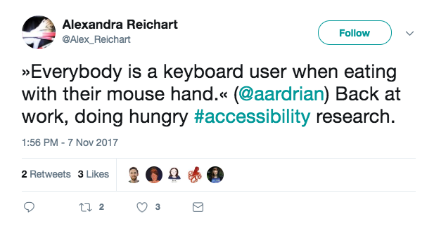
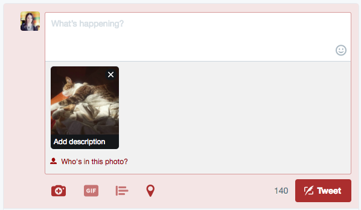

María Evangelina Ferreira Kuzminski
- Front-End Dev
- CSSConf Argentina Team
Itinerario
- ¿Qué es accesibilidad?
- ¿Cómo podemos ayudar?
¿Qué es accesibilidad?
A11y
"La accesibilidad es el derecho de cada usuario a navegar y comprender los sitios web que diseñamos."
Accesibilidad !== No videntes
Discapacidades
Categorizar por tipo o duración
Tipo
- Visuales
- Motrices
- Cognitivas
- Auditivas
- Cinestosis*
Duración
- Situacional
- Temporal
- Definitiva
Beneficios para todos
¿Cómo podemos ayudar?
3 pasos
1. Hacer ruido
2. Ayudar en Twitter
Agregar textos alternativos

Agregar textos alternativos
 "Gato macho tricolor durmiendo al sol"
"Gato macho tricolor durmiendo al sol"
Agregar textos alternativos
"Gata gris y blanca, la hermana"Agregar textos alternativos

3. Trabajando
- Desarrollo
- Audit
- Testing
Siglas
- AT: Assistive Technology
- SR: Screen Reader
- ARIA: Accessible Rich Internet Applications
Estándar WCAG 2.1
Desarrollo

Mark-up
Elementos de HTML
- Etiquetas neutrales
- Etiquetas semánticas
Barra de navegación
<div class="nav">
<ul>
<li><a href="#">Inicio</a></li>
<li><a href="#">Quienes somos</a></li>
<li><a href="#">Servicios</a></li>
<li><a href="#">Contacto</a></li>
</ul>
</div>
Hacer semántico
- Transformar el div en un nav
- Agregar role="navigation"
Atributo "role"
Establece la semántica de un elemento.
Los elementos semánticos tienen roles implícitos
Se pueden cambiar usando role="..."

Actually...
Porque nuestras etiquetas semánticas NO son suficientes
A veces necesitamos usar la etiqueta incorrecta
(Algunos) Roles disponibles
- navigation
- dialog
- alert
- presentation
- status
Y muchos más!
Roles en ARIAEtiquetas neutrales con roles
- Span que actúe como checkbox
- A que actúe como botón
Debemos generar la interactividad
aria attributesAudit
¿Cómo está mi sitio? ¿Qué puedo mejorar?
Audit
Veamos
Testing
Igual o más importante que los audit
Testing
- Navegación por teclado
- Screen Reader
Testing
Navegación por teclado*
Objetivos
- Verificar navegación, duh!
- Verificar outlines
- Eventos (enter, tab, spacebar)
- Loops infinitos de tab
Testing
- ChromeVox: Plugin de... Chrome
- NVDA: Open source (Windows)
- VoiceOver (Mac)
- JAWS: $$$
ChromeVox
Accesible y cross-platform*
Objetivos
- Verificar navegación
- Verificar la ausencia de los "Click acá"
- Verificar la interactividad
- Acercarse a la experiencia típica del usuario no vidente
Auriculares y... paciencia
Entonces...
- Audit
- Test
- Teamwork
- No es un afterthought
Por último
- Baby steps
- No teman equivocarse
Fun fact
¿Cómo vendo esta cosa?
¿Cómo ofrecemos accesibilidad?
- Ley
- RSE
- ... Números
15% de la población mundial
Organización Mundial de la Salud
Gracias!
- Slides: www.evaferreira.com.ar/a11y-ba
- Repo en GitHub
- @evaferreira92
- (: